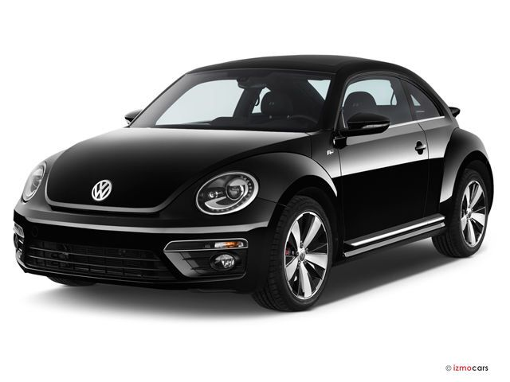
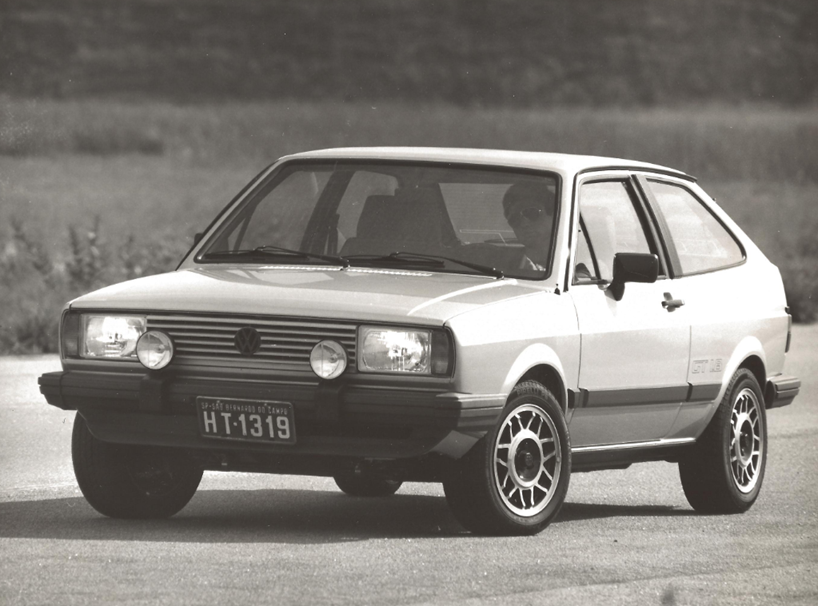

A Volkswagen, cujo nome significa "carro do povo" em alemão, é uma das maiores e mais reconhecidas fabricantes de automóveis do mundo. Sua origem remonta ao ano de 1937, na Alemanha, com a fundação da empresa Volkswagenwerk GmbH, criada com o objetivo de produzir um veículo acessível, confiável e econômico para a população alemã.
O projeto do primeiro automóvel foi desenvolvido pelo engenheiro Ferdinand Porsche, que recebeu a missão de criar um carro simples, resistente e de baixo custo. Dessa ideia nasceu o modelo que mais tarde seria conhecido mundialmente como Volkswagen Beetle, chamado no Brasil de Fusca.

Passe o mouse para ver a evolução do Fusca
O Fusca se destacou pelo seu design arredondado, motor traseiro refrigerado a ar e grande durabilidade mecânica. Essas características fizeram com que o carro conquistasse milhões de pessoas ao redor do planeta. Durante décadas, tornou-se símbolo de praticidade, simplicidade e confiabilidade. Durante a Segunda Guerra Mundial, a produção civil foi interrompida, e as instalações da Volkswagen passaram a fabricar veículos militares. Após o fim do conflito, a fábrica localizada em Wolfsburg, cidade criada em torno da montadora, foi reorganizada sob administração britânica. Em pouco tempo, a produção do Fusca foi retomada, iniciando uma nova fase de crescimento.
Expansão Internacional e Sucesso Mundial
Nas décadas de 1950 e 1960, a Volkswagen iniciou forte expansão internacional. O Fusca começou a ser exportado para diversos países e tornou-se especialmente popular nos Estados Unidos, onde ganhou fama por sua economia, confiabilidade e visual diferenciado.
Na cultura americana, o Beetle se transformou em símbolo de juventude, liberdade e personalidade própria. Também ficou conhecido mundialmente com o personagem Herbie, da Disney, reforçando ainda mais sua popularidade.
Além do Fusca, a Volkswagen passou a ampliar sua linha de veículos com modelos importantes, como:
Karmann Ghia – esportivo elegante baseado na mecânica do Fusca;
Type 2 (Kombi) – utilitário que marcou gerações;
Passat – sedã moderno e sofisticado;
Golf – hatchback que se tornou um dos carros mais vendidos da Europa;
Polo – compacto urbano de grande sucesso mundial.
Volkswagen no Brasil: Uma História Especial
A relação entre a Volkswagen e o Brasil é uma das mais importantes de toda a trajetória da marca no mundo. A empresa chegou oficialmente ao país em 1953, inicialmente montando veículos importados em instalações no bairro do Ipiranga, em São Paulo.
Em 1959, foi inaugurada a histórica fábrica de São Bernardo do Campo (SP), onde começou a produção nacional do Fusca. A partir daí, a Volkswagen se tornou parte da vida dos brasileiros, produzindo carros que marcaram gerações.
Com o crescimento da marca no país, novas unidades industriais foram inauguradas, ampliando a presença da Volkswagen no território nacional. Entre elas, destaca-se a fábrica de São José dos Pinhais, no Paraná, inaugurada em 18 de janeiro de 1999. Localizada na Região Metropolitana de Curitiba, a unidade se tornou uma das mais modernas da Volkswagen no mundo, com forte foco em tecnologia, eficiência e qualidade produtiva.
Para o estado do Paraná, a fábrica representa grande importância econômica e geração de empregos, além de ter papel marcante na vida de milhares de famílias da região. Ao longo dos anos, a planta de São José dos Pinhais produziu modelos importantes da marca, como Golf, Fox, CrossFox, SpaceFox e Saveiro, além de veículos da Audi. Atualmente, destaca-se pela produção do Volkswagen T-Cross, um dos SUVs mais vendidos do Brasil.
Ao longo das décadas, a Volkswagen lançou no Brasil modelos inesquecíveis:
Fusca – símbolo nacional sobre rodas;
Kombi – companheira de famílias e trabalhadores;
Brasília – desenvolvida especialmente para o mercado brasileiro;
Gol – um dos carros mais vendidos da história do país;
Voyage, Parati e Saveiro – grandes sucessos nacionais;
Fox – projeto brasileiro vendido em diversos mercados;
Polo, Virtus, Nivus e T-Cross – representantes da fase moderna da marca.
O Volkswagen Gol, lançado em 1980, merece destaque especial. Ele tornou-se um fenômeno nacional, liderando vendas por muitos anos consecutivos e entrando para a história como um dos veículos mais importantes já produzidos no Brasil.

Além disso, a Volkswagen investiu fortemente em engenharia nacional, criando centros de desenvolvimento no país e produzindo modelos pensados especificamente para o consumidor brasileiro.
O Grupo Volkswagen e Suas Marcas
Com o passar dos anos, a Volkswagen deixou de ser apenas uma fabricante de carros e tornou-se um dos maiores grupos automotivos do planeta: o Grupo Volkswagen.
Hoje, o grupo reúne diversas marcas reconhecidas mundialmente, cada uma com identidade própria:
Audi – tecnologia premium e esportividade refinada;
Porsche – alta performance e tradição esportiva;
Lamborghini – superesportivos italianos;
Bentley – luxo britânico;
Bugatti – hipercarros extremos;
SEAT / CUPRA – esportividade espanhola;
Škoda – tradição tcheca e excelente custo-benefício;
Volkswagen Veículos Comerciais – vans e utilitários.
Essa união permite compartilhar tecnologia, motores, plataformas e pesquisas, mantendo ao mesmo tempo a personalidade de cada marca.
Por exemplo:
Tecnologias da Audi ajudam em inovação eletrônica;
Conhecimentos da Porsche contribuem para desempenho;
Engenharia da Volkswagen é usada em milhões de veículos globais;
Marcas premium impulsionam avanços que depois chegam a carros populares.
Inovação e Era Moderna
Nas últimas décadas, a Volkswagen continuou evoluindo e se adaptando às novas exigências do mercado mundial.
A marca investiu fortemente em:
Segurança automotiva;
Motores mais eficientes;
Conectividade digital;
Plataformas modulares modernas;
Veículos híbridos e elétricos.
Entre os destaques recentes estão:
Golf GTI – referência entre hatches esportivos;
Polo – moderno e global;
Jetta GLI – sedã esportivo;
Tiguan e Taos – SUVs modernos;
ID.3 e ID.4 – elétricos da nova geração.
Legado da Volkswagen
Poucas marcas automotivas possuem uma ligação tão forte com as pessoas quanto a Volkswagen. Seja através do Fusca, da Kombi, do Gol ou dos modelos atuais, a empresa marcou famílias, histórias e gerações inteiras.
A Volkswagen se tornou sinônimo de tradição, confiabilidade, inovação e paixão automotiva. Mais do que fabricar carros, a marca construiu memórias ao redor do mundo — especialmente no Brasil, onde ocupa um lugar especial no coração de milhões de pessoas.
/i.s3.glbimg.com/v1/AUTH_59edd422c0c84a879bd37670ae4f538a/internal_photos/bs/2024/G/E/EOxHreQdu4rYgmW7iF4Q/bce8bc17-1634-4a19-84f3-2465253ecf4c.jpg)
 Para o estado do Paraná, a fábrica representa grande importância econômica e geração de empregos, além de ter papel marcante na vida de milhares de famílias da região. Ao longo dos anos, a planta de São José dos Pinhais produziu modelos importantes da marca, como Golf, Fox, CrossFox, SpaceFox e Saveiro, além de veículos da Audi. Atualmente, destaca-se pela produção do Volkswagen T-Cross, um dos SUVs mais vendidos do Brasil.
Para o estado do Paraná, a fábrica representa grande importância econômica e geração de empregos, além de ter papel marcante na vida de milhares de famílias da região. Ao longo dos anos, a planta de São José dos Pinhais produziu modelos importantes da marca, como Golf, Fox, CrossFox, SpaceFox e Saveiro, além de veículos da Audi. Atualmente, destaca-se pela produção do Volkswagen T-Cross, um dos SUVs mais vendidos do Brasil.